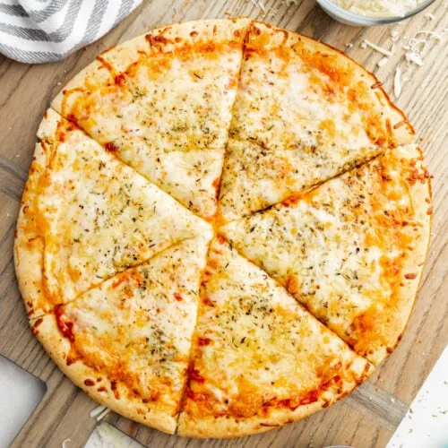

Cheese Pizza Recipe

Bring the delight of pizzeria-style pizza right into your
kitchen with this easy cheese pizza recipe -
perfect for family dinner nights or weekend feasts.
Ingredients
- 1 pound pizza dough
- 1/2 cup pizza sauce
- 1/4 cup grated Parmesan cheese
- 2 cups shredded mozzarella cheese
- 1 1/2 teaspoons Italian seasoning
The Recipe
- Preheat your oven to 500 degrees Fahrenheit. If
available, place a pizza stone inside during preheating.
- On a floured surface, roll out the pizza
dough to create a 12-inch circle.
- Transfer the rolled dough onto a pizza tray.
- Evenly spread the pizza sauce across the dough.
- Evenly sprinkle parmesan cheese,
mozzarella cheese, and Italian seasoning
over the sauce.
- Place the pizza on the preheated pizza
stone in the oven.
- Bake until the cheese has melted and
slightly browned, which will take
approximately 10 to 15 minutes.